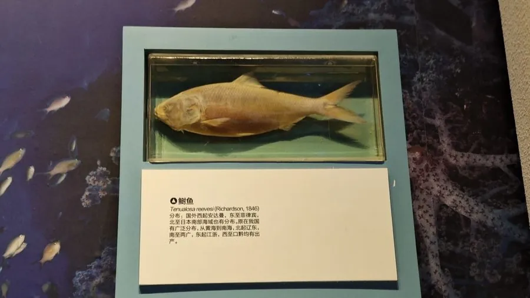

鱼类 · 动物界
鲥鱼 Tenualosa reevesii

长江与珠江流域的溯河洄游名贵鱼类，体侧扁银亮、鳞片易脱落，春夏溯江产卵，因过度捕捞与水利工程野生种群几近消失。
- 分类
- 门脊索动物门纲硬骨鱼纲目鲱形目科鲱科属鲥属
- 栖息环境
- 长江、珠江等大河干流及河口近海，产卵于江水中下游缓流处
- 地理分布
- 中国长江、珠江、钱塘江水系及东海、南海近岸
- 保护级别
- IUCN 数据缺乏（DD）；中国国家一级保护动物
物种志
鲥鱼体形侧扁而长，成年体长 30–50 厘米，体重 0.5–2 千克。体被银白色大而薄的圆鳞，鳞片极易脱落，背部深青灰至蓝绿色，体侧与腹部银亮如镜；头小，吻短，口端位，腹部有棱鳞形成锯齿状腹缘。尾鳍深叉，整体线条流畅，是典型的洄游性鲱科鱼类。
它们分布于中国长江、珠江、钱塘江等水系及东海、南海近岸，是溯河洄游鱼类：每年 4–6 月，性成熟的个体从近海溯江而上，到江水中下游的缓流处产卵，卵浮性，孵化后幼鱼顺流而下到河口与近海育肥。食性以浮游动物、小型甲壳类为主。鲥鱼素以肉质细嫩、鳞下多脂著称，与河豚、刀鱼并称“长江三鲜”。由于过度捕捞、江河建闸阻断洄游通道及水域污染，其野生资源在二十世纪后期急剧崩溃，现被列为国家一级保护动物。
形态与习性
- 体长约 30–50 cm，体重 0.5–2 kg
- 食性浮游动物与小型甲壳类
- 洄游4–6 月从近海溯江而上，到中下游缓流处产卵
- 鳞片银白色大薄圆鳞，极易脱落
- 腹部具棱鳞，形成锯齿状腹缘
- 种群现状野生资源在二十世纪后期急剧崩溃，多年未见稳定产卵群
- 文化地位与河豚、刀鱼并称“长江三鲜”
趣味知识
- 鲥鱼的鳞片又大又薄，一碰就掉，渔民用“带鳞清蒸”来保住鲜味。
- 它每年春夏从海里逆流进长江产卵，是典型的溯河洄游鱼。
- 因为味道极美，鲥鱼曾被大量捕捞，如今野生个体已极难见到。